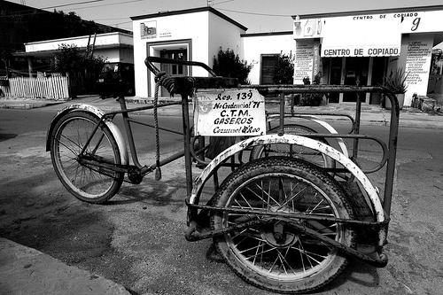
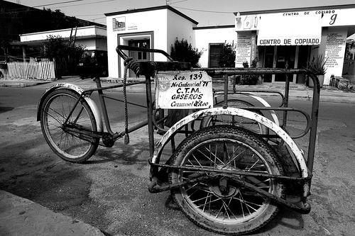
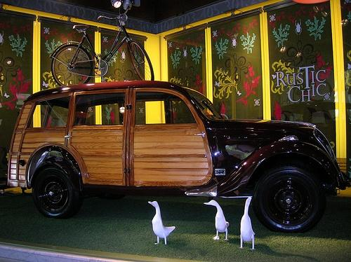
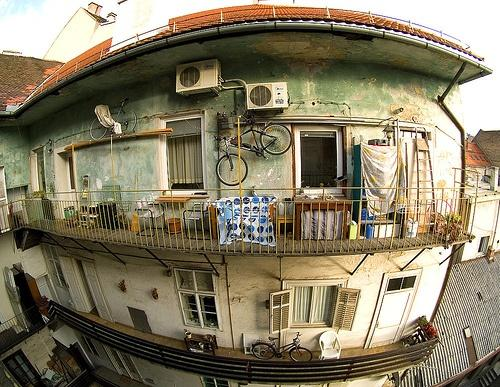
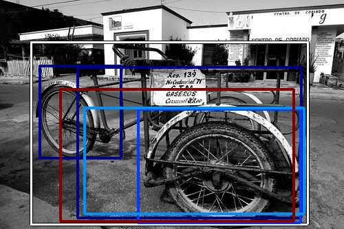
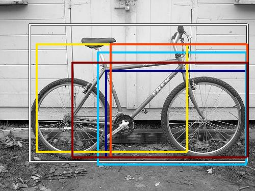
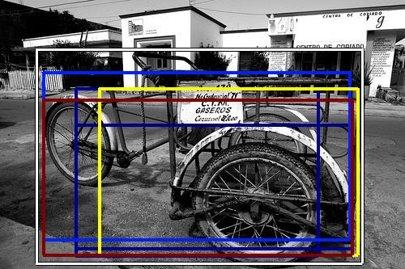
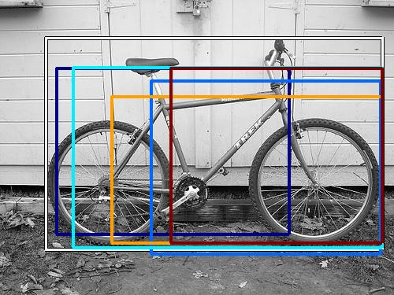
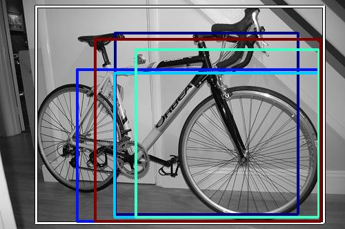
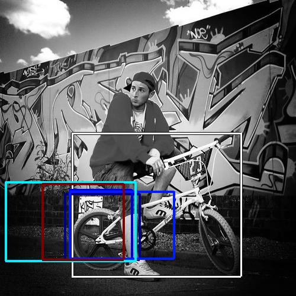

0.662644
0.666952

0.670655

0.707286

0.752534
0.761968

0.768201

0.793611

0.804063

0.816045
| Target image  | 0.662644 |  0.666952 | 0.670655 | 0.707286 | 0.752534 |  0.761968 | 0.768201 | 0.793611 | 0.804063 | 0.816045 |
| Target image  |  11786.157227 |  8098.428223 |  7981.766602 |  7940.308105 |  7491.518555 |  6659.001953 |  6320.980469 |  6267.069824 |  6165.222168 |  6117.914551 |
| Target image  |  10135.425781 |  10100.716797 |  9586.288086 |  9422.370117 |  8889.801758 |  8388.351562 |  7897.114746 |  7852.062500 |  7687.916504 |  7196.831055 |
Target image |  11897.560547 |  11315.041992 |  10157.871094 |  9587.959961 |  9478.322266 |  8657.315430 |  8119.291992 |  7747.772949 |  7073.554199 |  6833.333008 |
Target image |  13245.247070 |  10774.645508 |  9804.608398 |  8372.422852 |  8245.886719 |  7558.096680 |  7517.744141 |  6763.993164 |  6381.802246 |  6193.609863 |